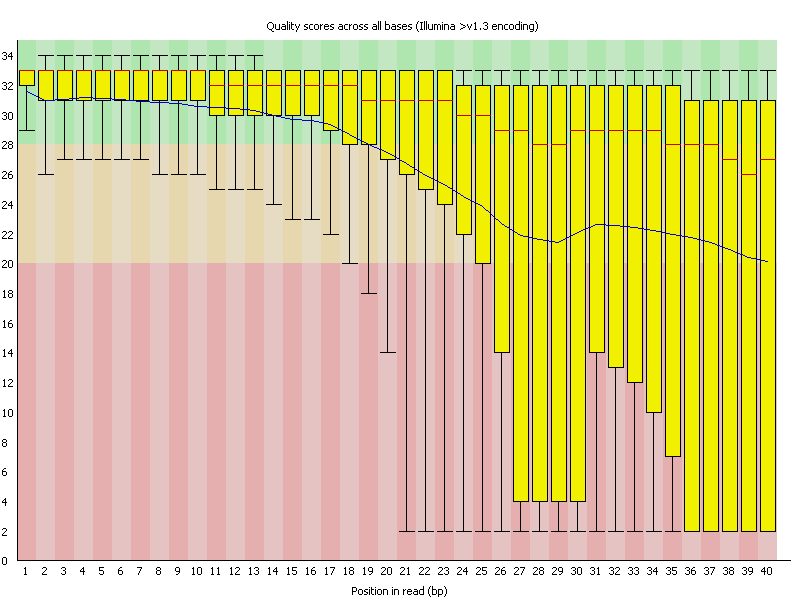

This view shows an overview of the range of quality values across all bases at each position in the FastQ file.

For each position a BoxWhisker type plot is drawn. The elements of the plot are as follows:
The y-axis on the graph shows the quality scores. The higher the score the better the base call. The background of the graph divides the y axis into very good quality calls (green), calls of reasonable quality (orange), and calls of poor quality (red). The quality of calls on most platforms will degrade as the run progresses, so it is common to see base calls falling into the orange area towards the end of a read.
It should be mentioned that there are number of different ways to encode a quality score in a FastQ file. FastQC attempts to automatically determine which encoding method was used, but in some very limited datasets it is possible that it will guess this incorrectly (ironically only when your data is universally very good!). The title of the graph will describe the encoding FastQC thinks your file used.
Results from this module will not be displayed if your input is a BAM/SAM file in which quality scores have not been recorded.
A warning will be issued if the lower quartile for any base is less than 10, or if the median for any base is less than 25.
This module will raise a failure if the lower quartile for any base is less than 5 or if the median for any base is less than 20.
The most common reason for warnings and failures in this module is a general degradation of quality over the duration of long runs. In general sequencing chemistry degrades with increasing read length and for long runs you may find that the general quality of the run falls to a level where a warning or error is triggered.
If the quality of the library falls to a low level then the most common remedy is to perform quality trimming where reads are truncated based on their average quality. For most libraries where this type of degradation has occurred you will often be simultaneously running into the issue of adapter read-through so a combined adapter and quality trimming step is often employed.
Another possibility is that a warn / error is triggered because of a short loss of quality earlier in the run, which then recovers to produce later good quality sequence. This can happen if there is a transient problem with the run (bubbles passing through a flowcell for example). You can normally see this type of error by looking at the per-tile quality plot (if available for your platform). In these cases trimming is not advisable as it will remove later good sequence, but you might want to consider masking bases during subsequent mapping or assembly.
If your library has reads of varying length then you can find a warning or error is triggered from this module because of very low coverage for a given base range. Before committing to any action, check how many sequences were responsible for triggering an error by looking at the sequence length distribution module results.